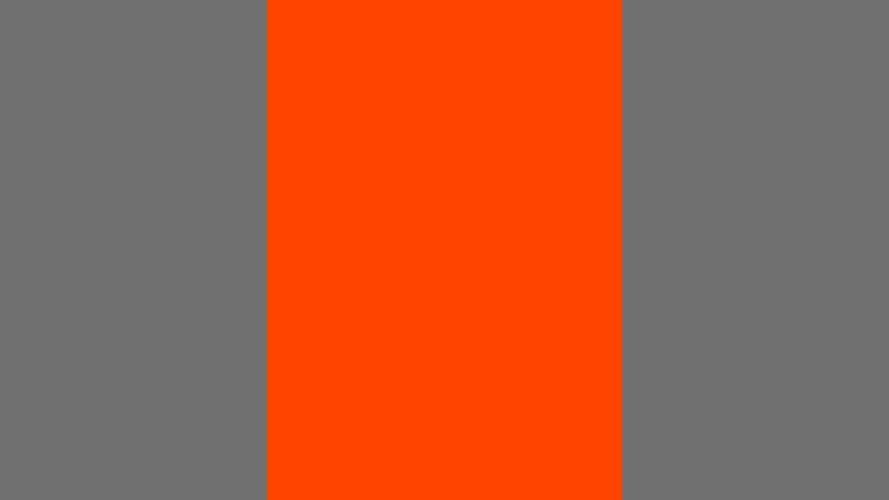
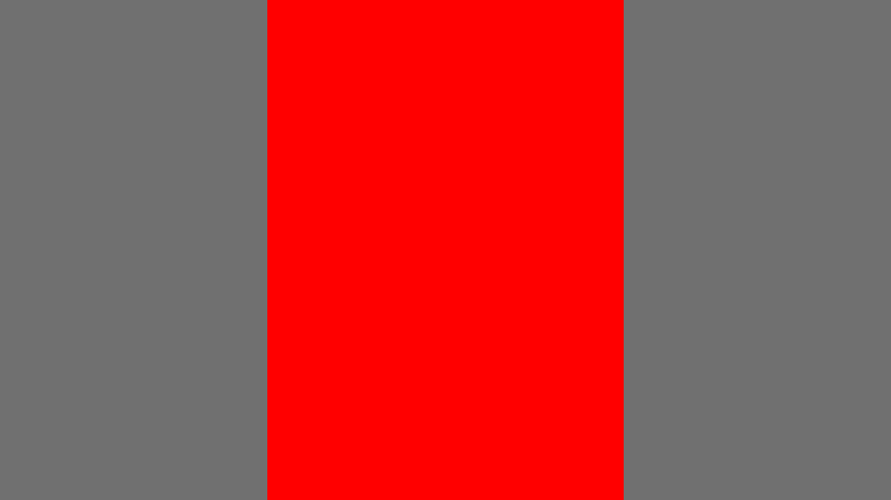

Open full-size A ↗
Open full-size C ↗Evaluation case · precision-shade-001
Imagine selecting this color in the color picker. You have not requested a percentage or a subject.
These are simple constructed wallpapers so we can focus on shade and amount. Each card repeats your target swatch.
Which examples match the shade closely enough for you?
Then, which would you prefer as search results? Give an order only if you have a clear preference.
A short description for A–D is enough. Ties, uncertainty, or “these shades look the same” are useful answers. No scores or percentages needed.

Open full-size A ↗
Open full-size C ↗